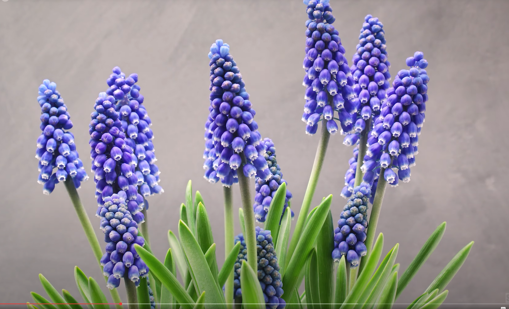
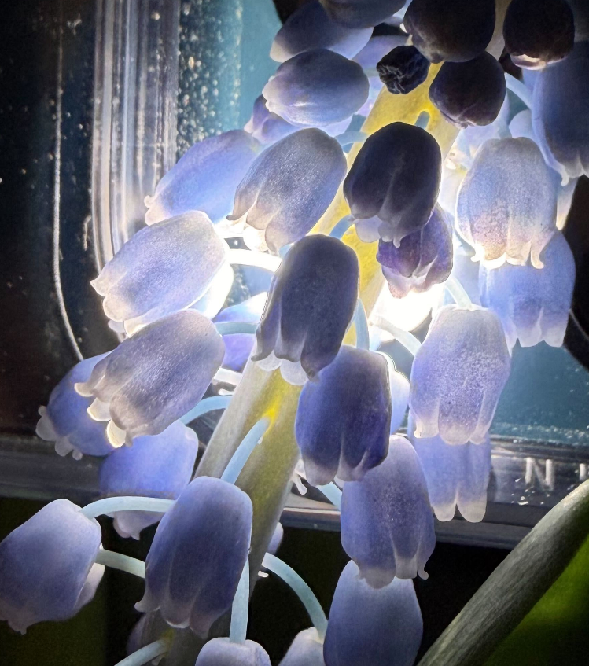
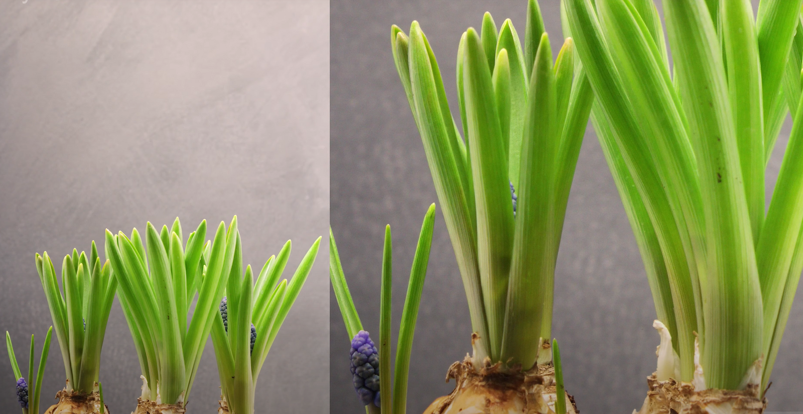
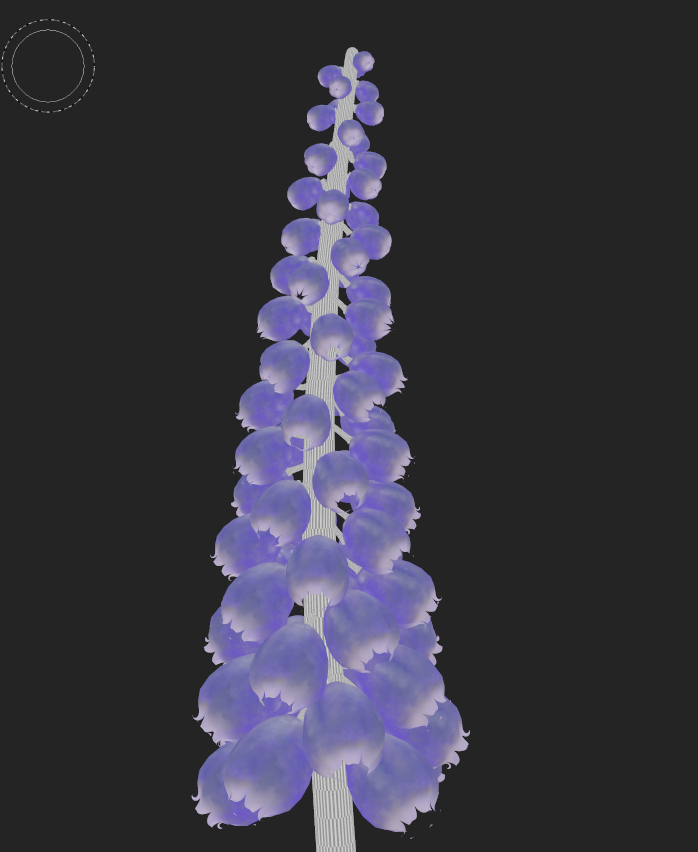
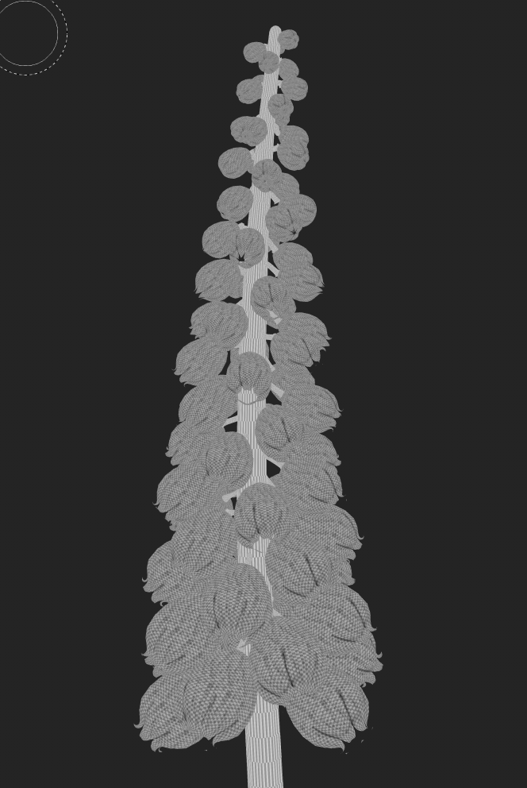
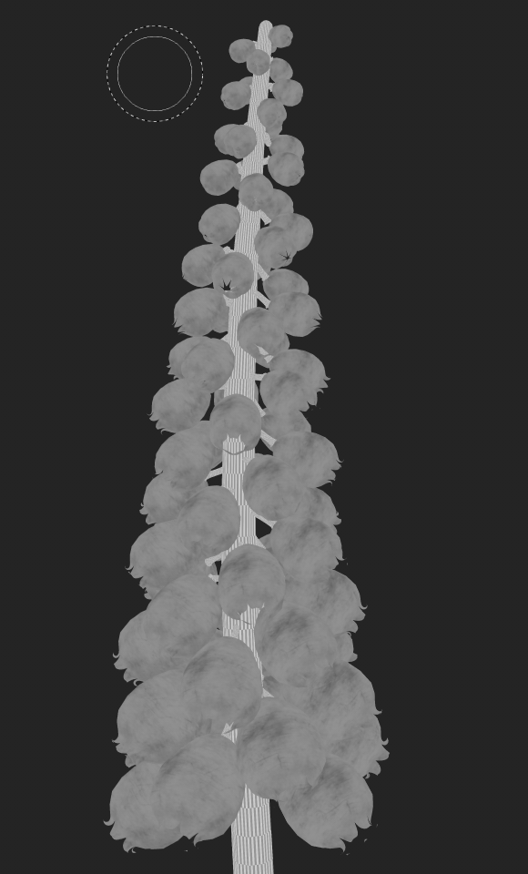
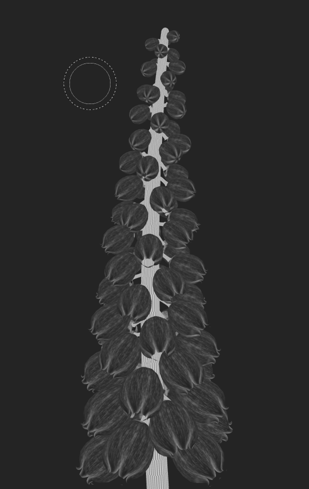
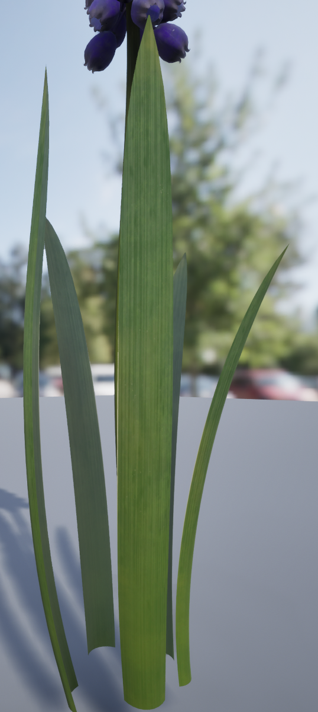
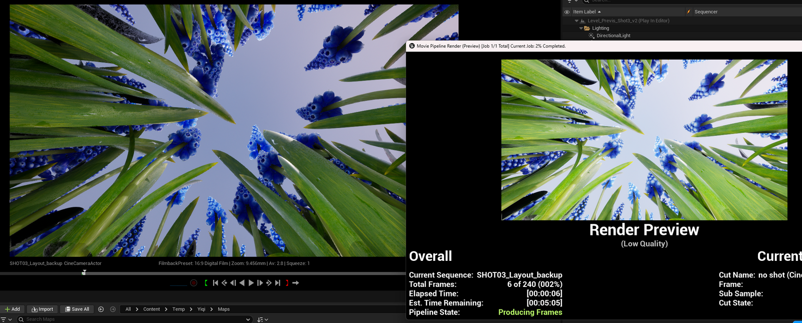

← 部落格 × Special Project | PART1


第 9 週
已完成：
待辦事項：
-
把 Itim 有動畫的樹從 Houdini 匯入 Unreal
-
研究如何把葡萄風信子轉成粒子，且動畫不會抖動
-
製作鏡頭 3 的佈局
-
研究葡萄風信子、葉子與莖的 shader
這週我主要在 Substance 3D Painter 中優化葡萄風信子的材質，重點是把不同的貼圖分開，讓它們能在 Unreal Engine 中正確指定。
參考



這些是我在 Substance Painter 中做的分開的貼圖。




葉子的部分，我先用 Substance Designer 做出程序化圖案，
再把圖案帶進 Substance Painter，做出客製化的葉子。

為了理解為什麼算圖顏色和視窗不同，Danci 說明這是 Unreal Engine 中的 Post Process Volume 造成的，所以我手動調整了曝光設定。

這些是在 Unreal Engine 中的材質迭代。